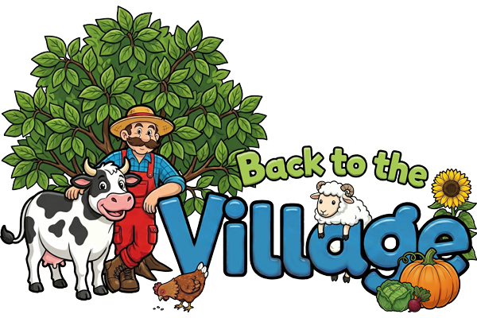

Back to the Village
Build your dream farm and enjoy a peaceful life!
Have you ever dreamed of escaping the noisy and polluted metropolis? The hero of Back to the Village takes this step and starts a new life among fields, gardens, and cozy buildings.
Create a farm from scratch that you can truly be proud of: grow crops, care for animals, develop production, and step by step turn a small household into a thriving business. And who knows — maybe this story will inspire your own farm 😉
🌱 Gardening
Plant vegetables, grains, and fruit trees. Harvest a rich crop and unlock new plant species.
🐄 Animal Husbandry
Get cute pets. Don't forget to feed them and collect fresh products.
⚒️ Master of Crafting
Build and develop production buildings. Turn raw materials into valuable goods to grow your farm even faster.
⚖️ Market Relations
Visit the local Market to profitably sell your harvest or buy everything needed for farm improvements.
🏆 Farmer's Book
Become a true collector! Grown plants, crafted goods, bought animals, or built structures are added to your personal record book.
🧘 Stress-Free Game
Eternal summer reigns in Back to the Village. No rush: your crops won't wilt, and animals won't die. Play for your pleasure at any time.
Frequently Asked Questions
Currently, there are 20 levels in the game. After level 20, the game enters freeplay mode — all features remain available, but no new quests will appear until the next update.
The daily reward offers a bonus of coins or vouchers every 24 hours. The bonus increases each day. If you don't claim it within 48 hours of it appearing, the counter resets to Day 1.
Available Now!
Start your peaceful farming journey today!
Download Back to the Village for free on your Android device.